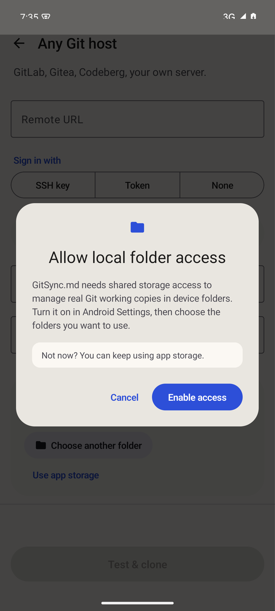
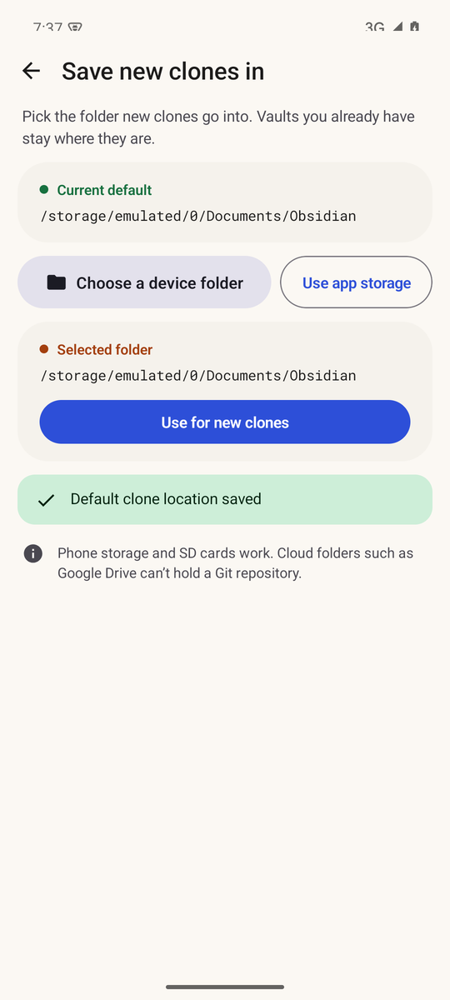
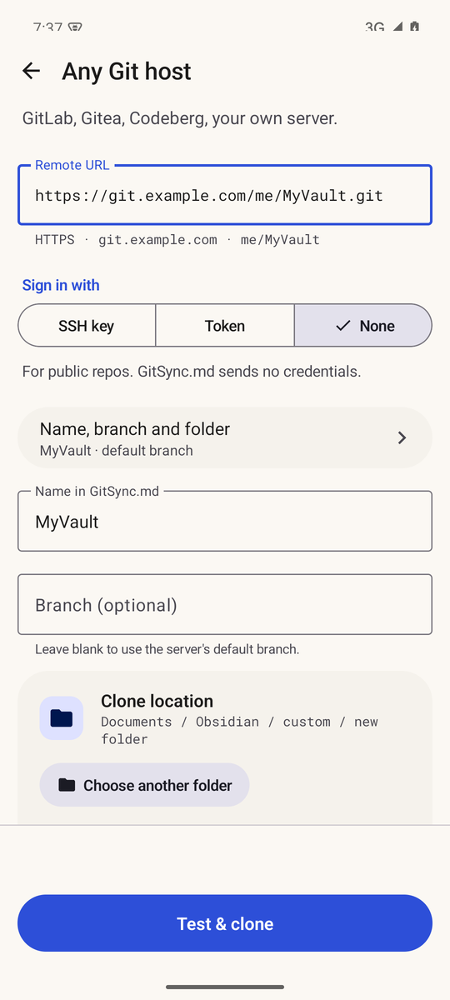
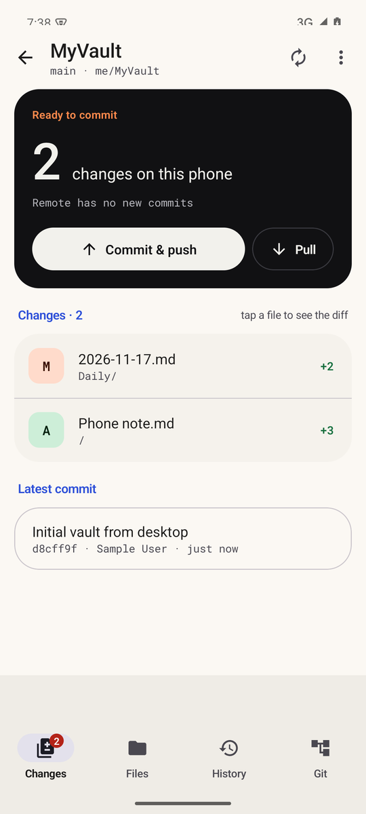
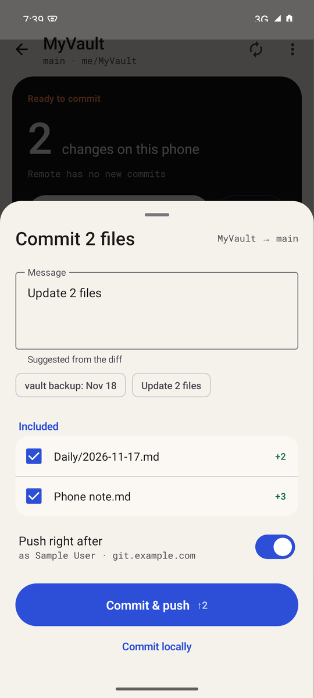
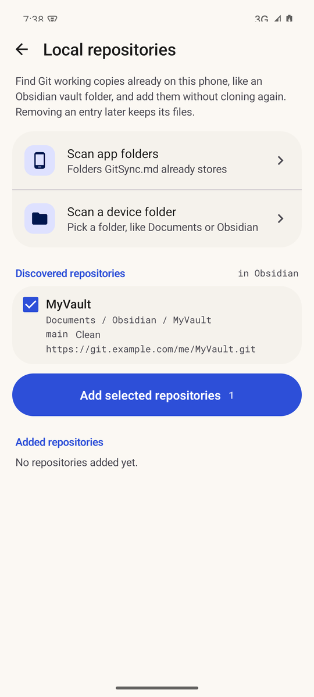
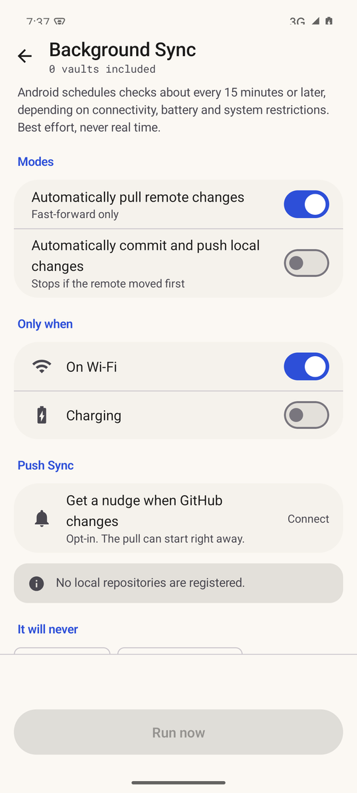

- Commit and push the vault to a GitHub, GitLab, Gitea or self-hosted repository from your computer.
- Turn off any other sync tool (Google Drive, FolderSync, Syncthing, Obsidian Sync) for this vault on the phone.
- Install GitSync.md from Google Play and sign in to GitHub, or add a token or SSH key for another host.
- Allow storage access and choose a device folder, such as
Documents/Obsidian, as the clone location. - Clone the vault, then open that folder in Obsidian with Open folder as vault.
- Write in Obsidian. In GitSync.md, review the changes, then use Commit & push and Pull.
GitSync.md is a different app from the open-source Android app called “GitSync”. The two apps are not related; see GitSync vs GitSync.md.
Three ways to use Git with Obsidian on Android
There are three common ways to do this. All three can work. They differ in how much setup you do and what you have to maintain yourself. If you haven’t settled on Git yet, compare it with Syncthing, Remotely Save and the other Obsidian Sync alternatives first.
| Obsidian Git plugin on mobile | Termux plus a script | Native Git client (GitSync.md) | |
|---|---|---|---|
| Setup | Install a community plugin in Obsidian and add HTTPS credentials | Install Termux, install Git, grant storage access, write and test a script | Install an app, sign in, choose the vault folder |
| SSH remotes | No: the README lists “No SSH authentication” on mobile | Yes, with OpenSSH in Termux | Yes, with a key made on the phone or an imported key |
| Large vaults | Limited by memory; the README warns that clone or pull can crash or run indefinitely | Uses command-line Git | Git runs in the app (JGit), outside Obsidian. For GitHub, the vault check shows the repository size before you clone |
| Runs in the background | While Obsidian is open | Only if you set it up, for example with Termux:Widget or a task app | Optional Background Sync. Android decides when it runs |
| What you maintain | Plugin settings and credentials in each vault | Packages, scripts, keys and the scheduling you build | App settings; Git rules stay in the repository |
| Cost | Free | Free | $9.99 once on Google Play (local store prices may vary), after a free vault check |
For more apps, see every Android Git client compared.
Obsidian Git plugin. The plugin works on mobile through isomorphic-git, a JavaScript implementation of Git. Its README marks mobile support as experimental and lists the limits: no SSH authentication, limited repository size because of memory, no rebase merge strategy and no submodules. It also says Obsidian may crash on clone or pull, depending on the device and free memory. Choose this route if your vault is small, uses an HTTPS remote, and you want everything inside Obsidian.
Termux plus a script. Termux gives you a Linux shell with real Git. You grant it storage access, clone the vault into a shared folder, and write a script that pulls, commits and pushes. To run the script with one tap, the Termux:Widget plugin runs scripts from ~/.shortcuts/ as a home-screen widget. Choose this route if you are comfortable in a terminal and want full control. You will maintain the scripts and keys yourself.
A native Git client. A Git app writes the working copy into the same folder Obsidian opens. You see diffs and conflicts in its interface, and you don’t need a terminal. The rest of this guide uses GitSync.md for this route.
Where the vault has to live on Android
Obsidian treats a vault as a folder on your local file system. On Android, both Obsidian and the Git client have to be able to read and write that same folder. In practice, that means a folder in the phone’s shared storage, such as Documents/Obsidian/MyVault, or one on an SD card.
A Git working copy also needs a real, writable folder with a hidden .git directory inside it. A cloud document provider such as Google Drive doesn’t expose its files as a normal folder, so it can’t hold the repository. GitSync.md rejects those locations. In the app’s words: “Phone storage and SD cards work. Cloud folders such as Google Drive can’t hold a Git repository.” For other ways to use Drive with Obsidian, see Obsidian and Google Drive.
To manage Git folders outside its own storage, GitSync.md asks for Android’s all-files access. Android grants it on a system settings page with the switch Allow access to manage all files. Git needs it because it creates, renames and deletes many small files inside .git on every commit and pull. If you skip it, GitSync.md can still clone into its own app storage, but Obsidian can’t open a vault there. The app says so on its Obsidian screen: “Vaults in app storage can’t be opened by Obsidian.”


Documents/Obsidian.
Before you start
- The vault is already in a Git repository. Commit and push it from your computer first. The repository root should be the vault root, the folder that contains
.obsidian. For the desktop side, see the Windows and GitHub workflow. Its desktop steps apply to Android too. - Only one sync method. Turn off or exclude Google Drive, FolderSync, Syncthing, Obsidian Sync and any other folder-sync tool for this vault on the phone. Two tools rewriting the same files cause duplicate notes and confusing conflicts. Choose one of the routes above, not two. Not sure which method you want? Compare Obsidian Sync and Git. iCloud isn’t available on Android, but the iCloud and Git comparison covers the same trade-offs.
- Keep workspace files out of Git. Obsidian rewrites
.obsidian/workspace.jsonandworkspace-mobile.jsonas you move around the app. Ignore them so every phone session doesn’t create a commit. See the Obsidian .gitignore guide, or generate the file with the Obsidian .gitignore generator. - A backup. Keep an independent copy of the vault before changing how it syncs.
GitSync.md needs Android 9 or later.
Set up GitSync.md step by step
Install and sign in
Install GitSync.md from Google Play. On the first screen, choose one of these:
- Continue with GitHub signs in through GitHub in your browser. You can also paste a personal access token. The app asks for the
repoanduser:emailscopes. - SSH, token or another host opens Any Git host for GitLab, Gitea, Codeberg or your own server. Paste the remote URL, then choose SSH key, Token or None (for public repositories). For SSH, the app can make a key on the phone: tap Copy public key, add it to your host once, or import an existing key file. GitSync.md asks you to confirm the server’s SSH host key the first time. The ideas in the self-hosted SSH guide for iPhone apply here too, although its screens are from iOS.
Credentials are encrypted and stored on the phone.
Choose the vault’s device folder
Before cloning, choose the device folder that new clones go into: Settings → Save new clones in → Choose a device folder. For a clone by URL, you can also choose a folder for that clone only, under Name, branch and folder → Clone location → Choose another folder. The first time, GitSync.md shows Allow local folder access. Tap Enable access, turn on Allow access to manage all files, and go back.
Android’s folder picker then opens. Pick or create the folder where your Obsidian vaults live, for example Documents/Obsidian. Tap Use this folder, then Allow, then Use for new clones.
Pick the repository and run the free vault check
Go to Add a vault → Clone from GitHub and tap Clone next to your vault repository. For another host, use Test & clone on the Any Git host screen. Before you pay, GitSync.md runs a Vault check. It confirms that it can reach the repository and branch. For supported GitHub connections, it can also check write access, size and file count, Git LFS use, and whether there is an .obsidian folder. Only metadata is read and no notes are downloaded. If the repository passes, Full Access is a one-time purchase through Google Play with no subscription. It costs $9.99 in the US, and Google Play shows the price in your currency before you confirm.
Clone
Confirm the clone. GitSync.md downloads the files and the full .git history into a new folder inside the folder you chose. Nothing downloads until you confirm.
- A GitHub clone goes into
<owner>/<repository>, for exampleDocuments/Obsidian/me/MyVault. - A clone by URL goes into a folder under
custom/with a name the app generates.
To see the exact folder of each vault, open Settings → Save new clones in. Each vault is listed with its folder under Move a vault you already have.
Open the same folder in Obsidian
In Obsidian’s vault picker, choose Open folder as vault and select the cloned folder, for example Documents/Obsidian/me/MyVault. Select the repository root itself, the folder that contains .obsidian, not a parent folder. Obsidian names the vault after that folder. If your .obsidian settings are committed, your themes and plugin settings come with the vault.
Link a working copy you already have
If a Git working copy is already in a device folder, for example one you cloned with Termux, don’t clone it again. Use Add a vault → Find clones on this phone → Scan a device folder, pick the folder, and tap Add selected repositories. Removing an entry from GitSync.md later keeps its files.
Edit, commit and push
Write in Obsidian as usual. When you open the vault in GitSync.md, the vault screen shows what changed on the phone. Tap a file to see a line-by-line diff. Tap Commit & push, choose which files to include, write a message or tap a suggested one, and leave Push right after on. Tap Pull to fetch changes from your other devices.



On the phone, pull before you start writing and push when you finish. If both devices changed the same lines, GitSync.md stops and shows the conflict. You can keep either version or edit the file by hand. The conflict concepts in the iPhone conflict recovery guide apply here too.
Keep it in sync
- By hand: Pull and Commit & push on the vault screen. This is the most predictable option.
- Quick Settings tiles: add the Pull all tile to fetch and fast-forward every vault on the phone. Pull all never stages, commits or pushes. A Background Sync tile turns background checks on or off.
- Home-screen widgets: a Pull all widget and Vaults and Vault widgets. See Settings → Widget & launcher shortcuts.
- Background Sync (optional): in Settings → Background Sync, turn on Automatically pull remote changes (fast-forward only). If you want, also turn on Automatically commit and push local changes, which is off by default. Then limit it to On Wi-Fi or Charging and include each vault. Each vault is bound to its branch, and a branch, folder or account change needs a fresh review.
Android decides when background work runs. In the app’s words: “Android schedules checks about every 15 minutes or later, depending on connectivity, battery and system restrictions. Best effort, never real time.” Battery saver and app restrictions can delay it further. See Android’s background work documentation. Background Sync never force-pushes, merges, switches branches or resolves conflicts. Anything unusual waits for you to open the app.

Verify it worked
- In Obsidian on the phone, create a note such as
Phone test.mdwith one line of text. - In GitSync.md, open the vault, check that the new file appears under Changes, and tap Commit & push.
- Open the repository on GitHub or your Git host in a browser. Confirm the new commit and the note’s exact contents.
- On your computer, pull and open the note in Obsidian.
- Now reverse the direction. Edit the note on the computer, commit and push, then tap Pull in GitSync.md and check the change in Obsidian on the phone.
Only turn on Background Sync after both directions work by hand.
Troubleshooting
Obsidian doesn’t show the notes
Obsidian is probably open on a different folder. In GitSync.md, check the vault’s folder in Settings → Save new clones in (for example Documents / Obsidian / me / MyVault), then open exactly that folder in Obsidian. If the repository has the vault inside a subfolder, open that subfolder instead. If the vault was cloned into app storage, Obsidian can’t open it. Move it under Settings → Save new clones in → Move a vault you already have.
The folder picker rejects a cloud folder
That is expected. Choose a folder on the phone or an SD card. Google Drive and other cloud document providers can’t hold a Git working copy.
Sign-in or push fails
For GitHub, check that the account or token has access to the repository and that the vault check showed write access. For other hosts, check the token or that the phone’s public key was added to the host, and confirm the SSH host key when asked.
A conflict after editing on two devices
Pull before editing on each device. If a conflict happens, keep either version or edit the file by hand in GitSync.md. Don’t force-push to clear it. See the conflict recovery guide for the concepts.
A commit every time you open Obsidian
That is usually .obsidian/workspace.json or workspace-mobile.json. Add them to .gitignore and remove them from tracking once. See the .gitignore guide.
FAQ
Does the Obsidian Git plugin work on Android?
Yes, with limits. On mobile it uses a JavaScript Git implementation without SSH. Its README calls mobile support experimental and warns about crashes on larger repositories. For small HTTPS vaults it can be enough.
Do I need Termux?
No. Termux works if you want to maintain a shell setup. A native Git client like GitSync.md does the same Git operations without a terminal.
Does it sync in the background?
Optionally. Background Sync can pull, and if you allow it, commit and push. Android controls when it runs, often every 15 minutes or later, so it is best effort, not real time.
Can I use GitLab, Gitea or self-hosted Git?
Yes. Use Any Git host with the remote URL and an HTTPS token or an SSH key. For GitLab token scopes, SSH host-key checks and protected-branch errors, see Sync Obsidian with GitLab.
Is GitSync.md the same app as “GitSync”?
No. GitSync.md is an independent app by Cody Bontecou. The open-source Android app called “GitSync” is a separate project.
Is the Android app the same as the iPhone app?
Not feature for feature. This guide only describes what the Android app does. iPhone-only features, such as Apple Shortcuts, are not part of it. For iPhone and iPad, follow the iPhone and iPad guide.